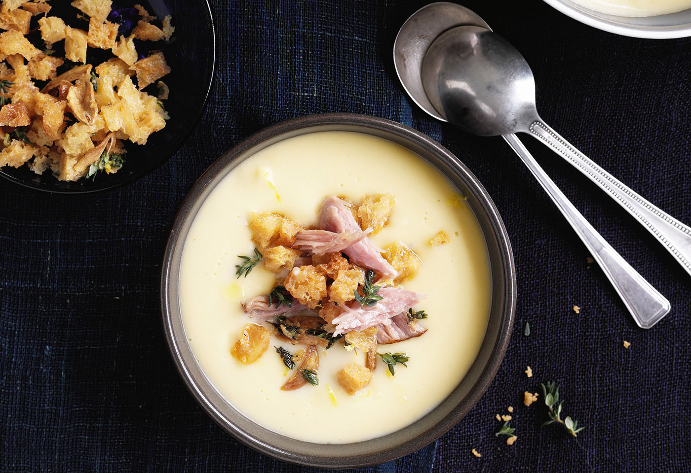

Sunday: Potato Soup

Description
A good, hot soup is something wonderful.
Especially, when it is cold outside and - most important - when it is a Potato Soup.
This recipe is an easy to make, yet delicious creme-soup for 4 people.
Ingredients
- 500g potatoes
- 1 bund mirepoix
- 1l beef broth
- salt & pepper
- a pinch of nutmeg
- half a teaspoon marjoram
- 1 tablespoon of butter
- 2 egg yolks
- 1/8l single cream
Steps
- Peel and dice the potatoes.
- Wash or clean and chop the mirepoix.
- Let both cook in the beef broth for 20-25 minutes at medium heat.
- Strain the soup through a sieve or puree the soup with a mixer.
- Let it cook at low heat for another 3 minutes, then add salt and the other spices. Refine with butter.
- Whisk the egg yolks with the single cream and slowly stir it into the soup.
- Wait a little, then serve and enjoy!
More recipes